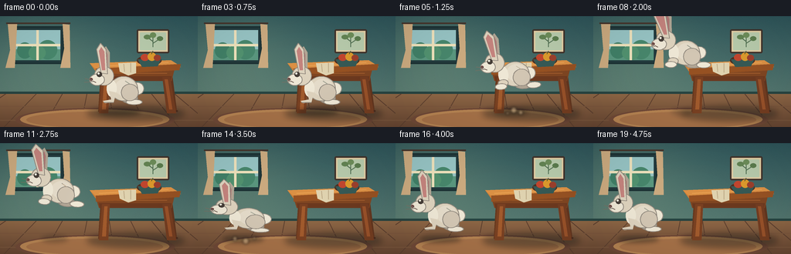
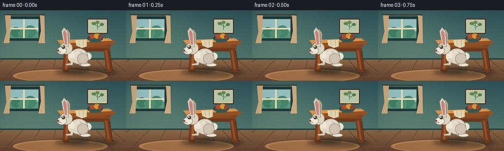
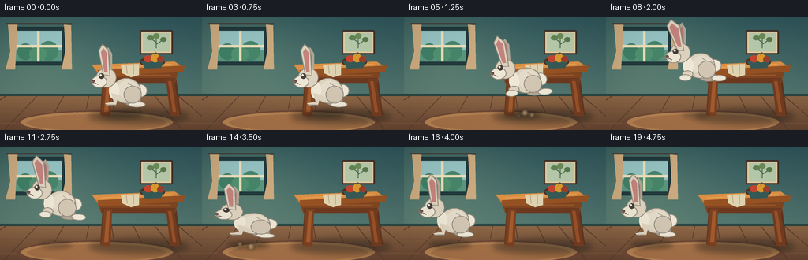
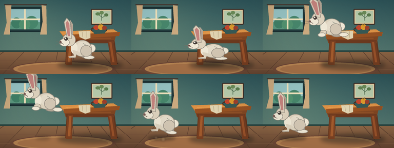
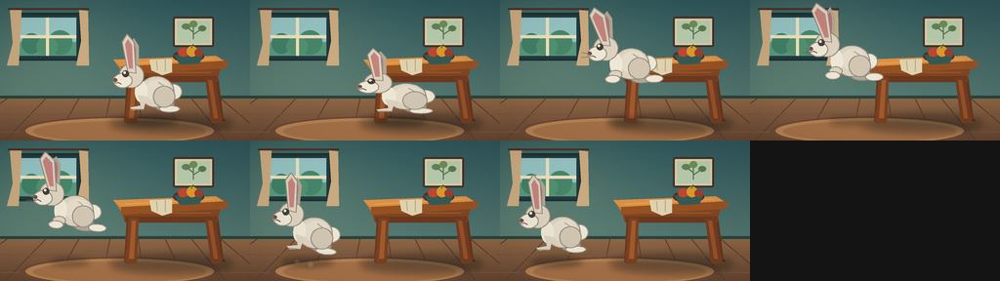

CODING AGENTS AS PIXEL WORLD MODELS
traex/GPT-5.6-Sol · dynamic_spatial_relationship_0019
点击播放 · 原生 RGB 像素
逐轮保存的候选
回放视频、检查图与代码变化。
每份候选均可单独播放。实际图片检查记录在下方工具轨迹中。
候选 01播放与检查图
点击播放 · 原生 RGB 像素


展开代码变化
--- 上一保存版本
+++ 本次保存版本
@@ -0,0 +1,242 @@
+from pathlib import Path
+import math
+import numpy as np
+from PIL import Image, ImageDraw, ImageFilter
+import artifact_io
+
+W,H,N = 256,144,20
+S=4
+np.random.seed(19)
+
+def C(v): return tuple(v)
+def sc(v): return int(round(v*S))
+def box(b): return tuple(sc(x) for x in b)
+def pts(p): return [(sc(x),sc(y)) for x,y in p]
+
+def ellipse(d,b,fill,outline=None,width=1):
+ d.ellipse(box(b),fill=fill,outline=outline,width=sc(width) if outline else 1)
+def rr(d,b,r,fill,outline=None,width=1):
+ d.rounded_rectangle(box(b),radius=sc(r),fill=fill,outline=outline,width=sc(width) if outline else 1)
+def poly(d,p,fill,outline=None): d.polygon(pts(p),fill=fill)
+def line(d,p,fill,width=1): d.line(pts(p),fill=fill,width=sc(width),joint='curve')
+
+def make_background():
+ # softly textured, warmly lit room
+ yy,xx=np.mgrid[0:H*S,0:W*S]
+ wall_top=np.array([47,86,91.],float); wall_bottom=np.array([83,118,111.],float)
+ t=np.clip(yy/(99*S),0,1)[...,None]
+ arr=wall_top*(1-t)+wall_bottom*t
+ # warm pool of daylight from left
+ glow=np.exp(-(((xx-48*S)/(92*S))**2+((yy-42*S)/(78*S))**2))[...,None]
+ arr += glow*np.array([19,17,8.])
+ noise=np.random.default_rng(7).normal(0,1.1,(H*S,W*S,1))
+ arr=np.clip(arr+noise,0,255).astype(np.uint8)
+ im=Image.fromarray(arr,'RGB')
+ d=ImageDraw.Draw(im)
+ # wainscot separator and floor
+ d.rectangle(box((0,98,W,101)),fill=(39,68,65))
+ for y in range(sc(101),sc(H)):
+ q=(y/S-101)/(H-101)
+ col=tuple(int((1-q)*a+q*b) for a,b in zip((142,103,70),(103,70,50)))
+ d.line([(0,y),(W*S,y)],fill=col,width=1)
+ # floorboard perspective and seams
+ for x0 in [-55,5,56,104,148,190,231,277]:
+ d.line(pts([(128+(x0-128)*0.66,101),(x0,144)]),fill=(91,62,46),width=sc(1))
+ for y in [117,135]: d.line(pts([(0,y),(256,y)]),fill=(122,86,61),width=sc(1))
+ # framed window, left wall
+ rr(d,(14,13,83,62),3,(35,59,62),(28,49,51),2)
+ d.rectangle(box((19,18,78,57)),fill=(151,196,196))
+ # outdoor soft sky/foliage
+ d.rectangle(box((19,43,78,57)),fill=(91,151,127))
+ for b,c in [((22,34,42,55),(65,128,103)),((49,31,74,56),(72,135,108)),((37,38,59,57),(82,146,112))]: ellipse(d,b,c)
+ d.rectangle(box((47,18,50,57)),fill=(238,226,188))
+ d.rectangle(box((19,36,78,39)),fill=(238,226,188))
+ # curtain accents
+ poly(d,[(10,10),(22,10),(19,67),(7,67),(13,44)],(204,171,128))
+ poly(d,[(81,10),(90,11),(91,67),(78,67),(83,42)],(204,171,128))
+ line(d,[(8,9),(91,9)],(70,52,43),2)
+ # small framed art above table
+ rr(d,(177,17,219,48),2,(225,205,164),(64,50,42),2)
+ rr(d,(181,21,215,44),1,(184,203,172))
+ # minimal botanical art
+ line(d,[(198,40),(198,27)],(75,105,76),1)
+ line(d,[(198,33),(190,27)],(75,105,76),1)
+ line(d,[(198,35),(207,29)],(75,105,76),1)
+ ellipse(d,(186,24,195,30),(99,132,84)); ellipse(d,(203,26,211,32),(91,124,78)); ellipse(d,(194,21,202,28),(109,141,89))
+ # rug gives contact plane, understated
+ ellipse(d,(20,119,226,150),(112,73,55))
+ ellipse(d,(26,121,219,147),(181,131,82))
+ ellipse(d,(34,124,211,145),(165,113,72))
+ return im
+
+BG=make_background()
+
+def table_layer():
+ im=Image.new('RGBA',(W*S,H*S),(0,0,0,0)); d=ImageDraw.Draw(im)
+ # floor shadow
+ sh=Image.new('RGBA',im.size,(0,0,0,0)); sd=ImageDraw.Draw(sh)
+ sd.ellipse(box((112,117,239,136)),fill=(25,29,26,105)); sh=sh.filter(ImageFilter.GaussianBlur(sc(4)))
+ im.alpha_composite(sh)
+ d=ImageDraw.Draw(im)
+ # rear legs (slightly dimmer)
+ poly(d,[(130,77),(139,77),(137,124),(127,124)],(104,58,32))
+ poly(d,[(215,77),(223,77),(229,124),(219,124)],(98,54,31))
+ # feet highlights
+ line(d,[(128,123),(137,123)],(77,45,30),2); line(d,[(220,123),(230,123)],(73,43,29),2)
+ # apron with wood grain
+ poly(d,[(123,68),(226,68),(222,84),(128,84)],(128,70,34))
+ poly(d,[(128,78),(222,78),(221,84),(129,84)],(108,57,31))
+ line(d,[(131,74),(216,74)],(161,92,44),1)
+ # front legs, strong shape
+ poly(d,[(132,79),(142,79),(140,126),(128,126)],(122,65,34))
+ poly(d,[(210,79),(220,79),(228,126),(216,126)],(116,61,33))
+ poly(d,[(135,82),(139,82),(137,121),(132,121)],(162,91,45))
+ poly(d,[(213,82),(217,82),(223,121),(219,121)],(153,82,42))
+ # tabletop bevel and top, slight perspective
+ poly(d,[(116,61),(221,57),(234,66),(124,72)],(202,126,57))
+ poly(d,[(124,68),(234,62),(232,70),(124,76)],(151,82,35))
+ poly(d,[(116,61),(221,57),(229,62),(123,68)],(220,145,69))
+ line(d,[(128,65),(218,60)],(237,166,87),1)
+ # bowl and fruit establishes tabletop
+ ellipse(d,(177,51,209,64),(78,48,35))
+ poly(d,[(178,56),(209,55),(204,65),(184,66)],(54,90,86))
+ ellipse(d,(182,49,193,58),(194,70,47)); ellipse(d,(191,47,202,58),(220,154,45)); ellipse(d,(199,50,208,58),(156,64,44))
+ line(d,[(196,49),(198,45)],(66,83,49),1)
+ # little cloth edge
+ poly(d,[(153,61),(176,60),(176,74),(166,77),(155,72)],(224,211,176))
+ line(d,[(160,62),(161,72)],(189,169,134),1); line(d,[(169,61),(169,73)],(189,169,134),1)
+ return im
+TABLE=table_layer()
+
+def transform(p,cx,cy,ang,stretch=1.0,squash=1.0):
+ x,y=p; x*=stretch; y*=squash
+ ca,sa=math.cos(ang),math.sin(ang)
+ return (cx+x*ca-y*sa, cy+x*sa+y*ca)
+
+def bunny(cx,cy,phase,angle=0,air=0,crouch=0,blink=False):
+ # draw to full-size transparent canvas, coordinates relative to body center
+ im=Image.new('RGBA',(W*S,H*S),(0,0,0,0))
+ d=ImageDraw.Draw(im)
+ sq=1+0.13*crouch; sy=1-0.16*crouch
+ def P(x,y): return transform((x,y),cx,cy,angle,sq,sy)
+ def E(b,fill,outline=None,w=1):
+ # polygons approximate rotated ellipses by points
+ x0,y0,x1,y1=b; mx=(x0+x1)/2; my=(y0+y1)/2; rx=(x1-x0)/2; ry=(y1-y0)/2
+ pp=[]
+ for k in range(36):
+ a=2*math.pi*k/36; pp.append(P(mx+rx*math.cos(a),my+ry*math.sin(a)))
+ d.polygon(pts(pp),fill=fill)
+ if outline: d.line(pts(pp+[pp[0]]),fill=outline,width=sc(w),joint='curve')
+ def L(pp,fill,w): d.line(pts([P(x,y) for x,y in pp]),fill=fill,width=sc(w),joint='curve')
+ def Q(pp,fill): d.polygon(pts([P(x,y) for x,y in pp]),fill=fill)
+ fur=(222,211,190,255); fur_hi=(239,232,214,255); fur_sh=(178,166,149,255); dark=(70,62,56,255)
+ pink=(197,132,126,255)
+ # far ear, trails dynamically while airborne
+ eartrail=air*7
+ Q([(-20,-27),(-24,-58),(-17,-66),(-12,-58),(-12,-29)],fur_sh)
+ Q([(-20,-31),(-21,-56),(-17,-61),(-15,-55),(-15,-31)],(176,119,116,255))
+ # tail behind body
+ E((15,-19,32,-3),fur_hi,(150,143,132,255),1)
+ # far hind leg / foot: stretches backward during flight
+ if air>0.15:
+ E((5,-1,28,9),fur_sh,(146,137,126,255),1)
+ E((20,1,38,9),fur_hi,(146,137,126,255),1)
+ else:
+ E((3,-5,24,8),fur_sh,(146,137,126,255),1)
+ E((9,3,30,10),fur_hi,(146,137,126,255),1)
+ # main body
+ E((-12,-27,24,5),fur,(145,137,126,255),1)
+ E((-5,-24,21,-1),(229,220,202,255))
+ # chest patch
+ E((-16,-22,-3,0),fur_hi)
+ # head and muzzle facing left
+ E((-32,-40,-7,-15),fur,(145,137,126,255),1)
+ E((-38,-30,-19,-15),fur_hi,(145,137,126,255),1)
+ # near ear changes lean with jump
+ lean=eartrail
+ ear=[(-23,-31),(-29-eartrail,-62),(-24-eartrail,-70),(-17-eartrail*0.4,-62),(-15,-30)]
+ Q(ear,fur)
+ L(ear+[ear[0]],(145,137,126,255),1)
+ Q([(-22,-35),(-26-eartrail,-60),(-23-eartrail,-65),(-19-eartrail*.4,-59),(-18,-35)],pink)
+ # near haunch volume
+ E((3,-17,25,5),(211,199,180,255),(145,137,126,255),1)
+ # forelegs: tuck in air, planted at rest
+ if air>0.12:
+ E((-17,-5,-4,4),fur,(145,137,126,255),1)
+ E((-21,0,-6,8),fur_hi,(145,137,126,255),1)
+ else:
+ Q([(-13,-8),(-4,-6),(-7,7),(-18,8),(-21,5),(-10,3)],fur)
+ L([(-20,7),(-7,7)],(142,131,119,255),1)
+ # eye and highlight; occasional blink after landing
+ if blink:
+ L([(-28,-29),(-23,-29)],dark,1)
+ else:
+ E((-29,-33,-22,-26),dark)
+ E((-27.8,-32,-25.2,-29.3),(247,245,225,255))
+ # nose, smile, whiskers
+ E((-38,-25,-34,-21),(111,73,69,255))
+ L([(-34,-21),(-30,-19)],(100,81,72,255),1)
+ L([(-35,-22),(-44,-24)],(123,111,99,210),1)
+ L([(-34,-20),(-45,-19)],(123,111,99,190),1)
+ # fur contour marks
+ L([(8,-21),(14,-17)],(190,178,160,180),1)
+ return im
+
+def motion(i):
+ # deliberately readable: establish in front, anticipate, jump left, settle
+ if i<=3: return 154.0,105.0,0.0,0.0,0.0
+ if i==4: return 153.0,108.0,0.0,0.0,1.0
+ if i<=13:
+ u=(i-4)/9.0
+ # eased horizontal travel and a clear parabolic leap
+ e=u*u*(3-2*u)
+ x=153+(59-153)*e
+ y=105-47*4*u*(1-u)
+ # velocity-oriented body tilt, subtle
+ slope=-47*4*(1-2*u)/94
+ ang=-0.10*(1-2*u)
+ return x,y,ang,math.sin(math.pi*u),0.0
+ if i==14: return 58.5,106.5,0.04,0.0,1.0
+ if i==15: return 58.0,102.5,-0.02,0.0,0.25
+ return 58.0,105.0,0.0,0.0,0.0
+
+def add_dust(im,i):
+ if i not in (5,6,13,14,15): return
+ lay=Image.new('RGBA',im.size,(0,0,0,0)); d=ImageDraw.Draw(lay)
+ if i in (5,6):
+ base=[(153,122,4),(162,125,3),(145,126,2)]
+ fade=150 if i==5 else 80
+ else:
+ base=[(48,124,3),(62,127,4),(73,123,2)]
+ fade={13:65,14:145,15:70}[i]
+ for x,y,r in base:
+ d.ellipse(box((x-r,y-r,x+r,y+r)),fill=(224,190,145,fade))
+ lay=lay.filter(ImageFilter.GaussianBlur(sc(1.4)))
+ im.alpha_composite(lay)
+
+def render(i):
+ base=BG.convert('RGBA')
+ # static table always behind rabbit, critical to initial "in front" relation
+ base.alpha_composite(TABLE)
+ x,y,a,air,crouch=motion(i)
+ # bunny's moving ground shadow; shrinks and fades with height
+ ground=125
+ height=max(0,105-y)
+ shadow=Image.new('RGBA',base.size,(0,0,0,0)); sd=ImageDraw.Draw(shadow)
+ sw=max(10,27-height*.30); alpha=int(max(38,110-height*1.25))
+ sd.ellipse(box((x-sw,120,x+sw,129)),fill=(28,31,27,alpha))
+ shadow=shadow.filter(ImageFilter.GaussianBlur(sc(3)))
+ base.alpha_composite(shadow)
+ add_dust(base,i)
+ base.alpha_composite(bunny(x,y,i,a,air,crouch,blink=(i==18)))
+ # soft vignette and downsample
+ rgb=base.convert('RGB').resize((W,H),Image.Resampling.LANCZOS)
+ ar=np.asarray(rgb).astype(np.float32)
+ yy,xx=np.mgrid[0:H,0:W]
+ vig=1-0.10*np.clip(((xx-W/2)/(W*.72))**2+((yy-H/2)/(H*.78))**2,0,1)
+ ar*=vig[...,None]
+ return np.clip(ar,0,255).astype(np.uint8)
+
+frames=np.stack([render(i) for i in range(N)],axis=0)
+artifact_io.save(frames,Path(__file__).resolve().parent)
+print('saved',frames.shape,frames.dtype)
候选 02播放与检查图
点击播放 · 原生 RGB 像素

展开代码变化
--- 上一保存版本
+++ 本次保存版本
@@ -191,9 +191,10 @@
# eased horizontal travel and a clear parabolic leap
e=u*u*(3-2*u)
x=153+(59-153)*e
- y=105-47*4*u*(1-u)
+ # enough lift to read as a jump while keeping the long ears in frame
+ y=105-32*4*u*(1-u)
# velocity-oriented body tilt, subtle
- slope=-47*4*(1-2*u)/94
+ slope=-32*4*(1-2*u)/94
ang=-0.10*(1-2*u)
return x,y,ang,math.sin(math.pi*u),0.0
if i==14: return 58.5,106.5,0.04,0.0,1.0
可观测工具轨迹
实际执行的命令与返回图片。
命令 1exit 0
/bin/bash -lc "cat prompt.txt && printf '\\n---RULES---\\n' && cat GENERATION_RULES.md && printf '\\n---SPEC---\\n' && cat task_spec.json"
命令 2exit 1
/bin/bash -lc "find . -maxdepth 2 -type f -printf '%p\\n' | sort && printf '\\n--- tools ---\\n' && command -v ffmpeg && command -v python3 && python3 - <<'PY'
try:
import PIL; print('PIL',PIL.__version__)
except Exception as e: print('no PIL',e)
try:
import cv2; print('cv2',cv2.__version__)
except Exception as e: print('no cv2',e)
PY"命令 3exit 0
/bin/bash -lc "cat artifact_io.py; echo; command -v python3 || true; command -v ffmpeg || true; python3 - <<'PY'
import numpy as np
print('numpy',np.__version__)
try:
from PIL import Image,ImageDraw,ImageFilter
print('PIL OK')
except Exception as e: print(e)
PY"命令 4exit 1
/bin/bash -lc "cat > generate.py <<'PY'
from pathlib import Path
import math
import numpy as np
from PIL import Image, ImageDraw, ImageFilter
import artifact_io
W,H,N = 256,144,20
S=4
np.random.seed(19)
def C(v): return tuple(v)
def sc(v): return int(round(v*S))
def box(b): return tuple(sc(x) for x in b)
def pts(p): return [(sc(x),sc(y)) for x,y in p]
def ellipse(d,b,fill,outline=None,width=1):
d.ellipse(box(b),fill=fill,outline=outline,width=sc(width) if outline else 1)
def rr(d,b,r,fill,outline=None,width=1):
d.rounded_rectangle(box(b),radius=sc(r),fill=fill,outline=outline,width=sc(width) if outline else 1)
def poly(d,p,fill,outline=None): d.polygon(pts(p),fill=fill)
def line(d,p,fill,width=1): d.line(pts(p),fill=fill,width=sc(width),joint='curve')
def make_background():
# softly textured, warmly lit room
yy,xx=np.mgrid[0:H*S,0:W*S]
wall_top=np.array([47,86,91.],float); wall_bottom=np.array([83,118,111.],float)
t=np.clip(yy/(99*S),0,1)[...,None]
arr=wall_top*(1-t)+wall_bottom*t
# warm pool of daylight from left
glow=np.exp(-(((xx-48*S)/(92*S))**2+((yy-42*S)/(78*S))**2))[...,None]
arr += glow*np.array([19,17,8.])
noise=np.random.default_rng(7).normal(0,1.1,(H*S,W*S,1))
arr=np.clip(arr+noise,0,255).astype(np.uint8)
im=Image.fromarray(arr,'RGB')
d=ImageDraw.Draw(im)
# wainscot separator and floor
d.rectangle(box((0,98,W,101)),fill=(39,68,65))
for y in range(sc(101),sc(H)):
q=(y/S-101)/(H-101)
col=tuple(int((1-q)*a+q*b) for a,b in zip((142,103,70),(103,70,50)))
d.line([(0,y),(W*S,y)],fill=col,width=1)
# floorboard perspective and seams
for x0 in [-55,5,56,104,148,190,231,277]:
d.line(pts([(128+(x0-128)*0.66,101),(x0,144)]),fill=(91,62,46),width=sc(1))
for y in [117,135]: d.line(pts([(0,y),(256,y)]),fill=(122,86,61),width=sc(1))
# framed window, left wall
rr(d,(14,13,83,62),3,(35,59,62),(28,49,51),2)
d.rectangle(box((19,18,78,57)),fill=(151,196,196))
# outdoor soft sky/foliage
d.rectangle(box((19,43,78,57)),fill=(91,151,127))
for b,c in [((22,34,42,55),(65,128,103)),((49,31,74,56),(72,135,108)),((37,38,59,57),(82,146,112))]: ellipse(d,b,c)
d.rectangle(box((47,18,50,57)),fill=(238,226,188))
d.rectangle(box((19,36,78,39)),fill=(238,226,188))
# curtain accents
poly(d,[(10,10),(22,10),(19,67),(7,67),(13,44)],(204,171,128))
poly(d,[(81,10),(90,11),(91,67),(78,67),(83,42)],(204,171,128))
line(d,[(8,9),(91,9)],(70,52,43),2)
# small framed art above table
rr(d,(177,17,219,48),2,(225,205,164),(64,50,42),2)
rr(d,(181,21,215,44),1,(184,203,172))
# minimal botanical art
line(d,[(198,40),(198,27)],(75,105,76),1)
line(d,[(198,33),(190,27)],(75,105,76),1)
line(d,[(198,35),(207,29)],(75,105,76),1)
ellipse(d,(186,24,195,30),(99,132,84)); ellipse(d,(203,26,211,32),(91,124,78)); ellipse(d,(194,21,202,28),(109,141,89))
# rug gives contact plane, understated
ellipse(d,(20,119,226,150),(112,73,55))
ellipse(d,(26,121,219,147),(181,131,82))
ellipse(d,(34,124,211,145),(165,113,72))
return im
BG=make_background()
def table_layer():
im=Image.new('RGBA',(W*S,H*S),(0,0,0,0)); d=ImageDraw.Draw(im)
# floor shadow
sh=Image.new('RGBA',im.size,(0,0,0,0)); sd=ImageDraw.Draw(sh)
sd.ellipse(box((112,117,239,136)),fill=(25,29,26,105)); sh=sh.filter(ImageFilter.GaussianBlur(sc(4)))
im.alpha_composite(sh)
d=ImageDraw.Draw(im)
# rear legs (slightly dimmer)
poly(d,[(130,77),(139,77),(137,124),(127,124)],(104,58,32))
poly(d,[(215,77),(223,77),(229,124),(219,124)],(98,54,31))
# feet highlights
line(d,[(128,123),(137,123)],(77,45,30),2); line(d,[(220,123),(230,123)],(73,43,29),2)
# apron with wood grain
poly(d,[(123,68),(226,68),(222,84),(128,84)],(128,70,34))
poly(d,[(128,78),(222,78),(221,84),(129,84)],(108,57,31))
line(d,[(131,74),(216,74)],(161,92,44),1)
# front legs, strong shape
poly(d,[(132,79),(142,79),(140,126),(128,126)],(122,65,34))
poly(d,[(210,79),(220,79),(228,126),(216,126)],(116,61,33))
poly(d,[(135,82),(139,82),(137,121),(132,121)],(162,91,45))
poly(d,[(213,82),(217,82),(223,121),(219,121)],(153,82,42))
# tabletop bevel and top, slight perspective
poly(d,[(116,61),(221,57),(234,66),(124,72)],(202,126,57))
poly(d,[(124,68),(234,62),(232,70),(124,76)],(151,82,35))
poly(d,[(116,61),(221,57),(229,62),(123,68)],(220,145,69))
line(d,[(128,65),(218,60)],(237,166,87),1)
# bowl and fruit establishes tabletop
ellipse(d,(177,51,209,64),(78,48,35))
poly(d,[(178,56),(209,55),(204,65),(184,66)],(54,90,86))
ellipse(d,(182,49,193,58),(194,70,47)); ellipse(d,(191,47,202,58),(220,154,45)); ellipse(d,(199,50,208,58),(156,64,44))
line(d,[(196,49),(198,45)],(66,83,49),1)
# little cloth edge
poly(d,[(153,61),(176,60),(176,74),(166,77),(155,72)],(224,211,176))
line(d,[(160,62),(161,72)],(189,169,134),1); line(d,[(169,61),(169,73)],(189,169,134),1)
return im
TABLE=table_layer()
def transform(p,cx,cy,ang,stretch=1.0,squash=1.0):
x,y=p; x*=stretch; y*=squash
ca,sa=math.cos(ang),math.sin(ang)
return (cx+x*ca-y*sa, cy+x*sa+y*ca)
def bunny(cx,cy,phase,angle=0,air=0,crouch=0,blink=False):
# draw to full-size transparent canvas, coordinates relative to body center
im=Image.new('RGBA',(W*S,H*S),(0,0,0,0))
d=ImageDraw.Draw(im)
sq=1+0.13*crouch; sy=1-0.16*crouch
def P(x,y): return transform((x,y),cx,cy,angle,sq,sy)
def E(b,fill,outline=None,w=1):
# polygons approximate rotated ellipses by points
x0,y0,x1,y1=b; mx=(x0+x1)/2; my=(y0+y1)/2; rx=(x1-x0)/2; ry=(y1-y0)/2
pp=[]
for k in range(36):
a=2*math.pi*k/36; pp.append(P(mx+rx*math.cos(a),my+ry*math.sin(a)))
d.polygon(pts(pp),fill=fill)
if outline: d.line(pts(pp+[pp[0]]),fill=outline,width=sc(w),joint='curve')
def L(pp,fill,w): d.line(pts([P(x,y) for x,y in pp]),fill=fill,width=sc(w),joint='curve')
def Q(pp,fill): d.polygon(pts([P(x,y) for x,y in pp]),fill=fill)
fur=(222,211,190,255); fur_hi=(239,232,214,255); fur_sh=(178,166,149,255); dark=(70,62,56,255)
pink=(197,132,126,255)
# far ear, trails dynamically while airborne
eartrail=air*7
Q([(-20,-27),(-24,-58),(-17,-66),(-12,-58),(-12,-29)],fur_sh)
Q([(-20,-31),(-21,-56),(-17,-61),(-15,-55),(-15,-31)],(176,119,116,255))
# tail behind body
E((15,-19,32,-3),fur_hi,(150,143,132,255),1)
# far hind leg / foot: stretches backward during flight
if air>0.15:
E((5,-1,28,9),fur_sh,(146,137,126,255),1)
E((20,1,38,9),fur_hi,(146,137,126,255),1)
else:
E((3,-5,24,8),fur_sh,(146,137,126,255),1)
E((9,3,30,10),fur_hi,(146,137,126,255),1)
# main body
E((-12,-27,24,5),fur,(145,137,126,255),1)
E((-5,-24,21,-1),(229,220,202,255))
# chest patch
E((-16,-22,-3,0),fur_hi)
# head and muzzle facing left
E((-32,-40,-7,-15),fur,(145,137,126,255),1)
E((-38,-30,-19,-15),fur_hi,(145,137,126,255),1)
# near ear changes lean with jump
lean=eartrail
Q([(-23,-31),(-29-eartrail,-62),(-24-eartrail,-70),(-17-eartrail*0.4,-62),(-15,-30)],fur,(145,137,126,255))
Q([(-22,-35),(-26-eartrail,-60),(-23-eartrail,-65),(-19-eartrail*.4,-59),(-18,-35)],pink)
# near haunch volume
E((3,-17,25,5),(211,199,180,255),(145,137,126,255),1)
# forelegs: tuck in air, planted at rest
if air>0.12:
E((-17,-5,-4,4),fur,(145,137,126,255),1)
E((-21,0,-6,8),fur_hi,(145,137,126,255),1)
else:
Q([(-13,-8),(-4,-6),(-7,7),(-18,8),(-21,5),(-10,3)],fur)
L([(-20,7),(-7,7)],(142,131,119,255),1)
# eye and highlight; occasional blink after landing
if blink:
L([(-28,-29),(-23,-29)],dark,1)
else:
E((-29,-33,-22,-26),dark)
E((-27.8,-32,-25.2,-29.3),(247,245,225,255))
# nose, smile, whiskers
E((-38,-25,-34,-21),(111,73,69,255))
L([(-34,-21),(-30,-19)],(100,81,72,255),1)
L([(-35,-22),(-44,-24)],(123,111,99,210),1)
L([(-34,-20),(-45,-19)],(123,111,99,190),1)
# fur contour marks
L([(8,-21),(14,-17)],(190,178,160,180),1)
return im
def motion(i):
# deliberately readable: establish in front, anticipate, jump left, settle
if i<=3: return 154.0,105.0,0.0,0.0,0.0
if i==4: return 153.0,108.0,0.0,0.0,1.0
if i<=13:
u=(i-4)/9.0
# eased horizontal travel and a clear parabolic leap
e=u*u*(3-2*u)
x=153+(59-153)*e
y=105-47*4*u*(1-u)
# velocity-oriented body tilt, subtle
slope=-47*4*(1-2*u)/94
ang=-0.10*(1-2*u)
return x,y,ang,math.sin(math.pi*u),0.0
if i==14: return 58.5,106.5,0.04,0.0,1.0
if i==15: return 58.0,102.5,-0.02,0.0,0.25
return 58.0,105.0,0.0,0.0,0.0
def add_dust(im,i):
if i not in (5,6,13,14,15): return
lay=Image.new('RGBA',im.size,(0,0,0,0)); d=ImageDraw.Draw(lay)
if i in (5,6):
base=[(153,122,4),(162,125,3),(145,126,2)]
fade=150 if i==5 else 80
else:
base=[(48,124,3),(62,127,4),(73,123,2)]
fade={13:65,14:145,15:70}[i]
for x,y,r in base:
d.ellipse(box((x-r,y-r,x+r,y+r)),fill=(224,190,145,fade))
lay=lay.filter(ImageFilter.GaussianBlur(sc(1.4)))
im.alpha_composite(lay)
def render(i):
base=BG.convert('RGBA')
# static table always behind rabbit, critical to initial \"in front\" relation
base.alpha_composite(TABLE)
x,y,a,air,crouch=motion(i)
# bunny's moving ground shadow; shrinks and fades with height
ground=125
height=max(0,105-y)
shadow=Image.new('RGBA',base.size,(0,0,0,0)); sd=ImageDraw.Draw(shadow)
sw=max(10,27-height*.30); alpha=int(max(38,110-height*1.25))
sd.ellipse(box((x-sw,120,x+sw,129)),fill=(28,31,27,alpha))
shadow=shadow.filter(ImageFilter.GaussianBlur(sc(3)))
base.alpha_composite(shadow)
add_dust(base,i)
base.alpha_composite(bunny(x,y,i,a,air,crouch,blink=(i==18)))
# soft vignette and downsample
rgb=base.convert('RGB').resize((W,H),Image.Resampling.LANCZOS)
ar=np.asarray(rgb).astype(np.float32)
yy,xx=np.mgrid[0:H,0:W]
vig=1-0.10*np.clip(((xx-W/2)/(W*.72))**2+((yy-H/2)/(H*.78))**2,0,1)
ar*=vig[...,None]
return np.clip(ar,0,255).astype(np.uint8)
frames=np.stack([render(i) for i in range(N)],axis=0)
artifact_io.save(frames,Path(__file__).resolve().parent)
print('saved',frames.shape,frames.dtype)
PY
python3 generate.py"命令 5exit 0
/bin/bash -lc "python3 generate.py && python3 - <<'PY'
import numpy as np
from PIL import Image
z=np.load('pixels.npz')['pixels']
print(z.shape,z.dtype,hex(int(z.min())),hex(int(z.max())))
# make a compact motion strip
files=['frames/00.png','frames/04.png','frames/07.png','frames/10.png','frames/13.png','frames/19.png']
ims=[Image.open(x) for x in files]
out=Image.new('RGB',(256*3,144*2))
for i,im in enumerate(ims): out.paste(im,((i%3)*256,(i//3)*144))
out.save('motion_strip.png')
PY"命令 6exit 0
/bin/bash -lc "python3 generate.py && python3 - <<'PY'
from PIL import Image
files=['frames/00.png','frames/04.png','frames/07.png','frames/09.png','frames/11.png','frames/13.png','frames/19.png']
out=Image.new('RGB',(256*4,144*2),(20,20,20))
for i,f in enumerate(files): out.paste(Image.open(f),((i%4)*256,(i//4)*144))
out.save('motion_strip.png')
PY"视觉工具实际返回图片 1

视觉工具实际返回图片 2

视觉工具实际返回图片 3

保存候选 2 份；完成命令 6 次；可验证图片返回 3 张。原始 API 响应与完整日志保留在本地。